전문장비로 원스톱 위생 솔루션
어떤 제품인가요?
어떤 관리가 필요 한가요?
어떤 공간 인가요?
지역을 선택 해주세요
도시/시/군/구를 선택해주세요
상담 내용
크린메이트(Clean Mate)
회사 소개
**건강한 환경, 지속 가능한 미래를 만드는 크린메이트**
크린메이트는 단순한 청소를 넘어, 친환경 살균 기술과 과학적 예방 정비를 통해 쾌적하고 안전한 생활 환경을 제공하는 환경 메인터넌스 전문 기업입니다. 우리는 고온다습한 한국의 기후 특성상 발생하기 쉬운 곰팡이, 세균 등 미생물 오염을 근본적으로 제거하고, 재발을 방지하는 것에 집중합니다.
우리의 철학: 환경과 건강의 조화
현대인은 쾌적한 생활을 위해 주거와 업무 환경을 끊임없이 개선해왔지만, 그 과정에서 무의식적으로 환경을 해치거나 건강을 위협하는 요소들을 간과해왔습니다. 특히 밀폐된 공간, 습도 높은 환경은 곰팡이와 세균의 온상이 되어 알레르기, 천식, 원내 감염, 식중독 등 심각한 건강 문제를 야기합니다.
크린메이트는 **화학약품에 의존하지 않는 친환경 살균 기술**로 곰팡이와 세균을 근원부터 사멸시키고, 인체에 안전한 방곰팡이 처리를 통해 장기간 재발을 방지합니다. 이것이 바로 당사의 **MOS(Maintenance Optimization Solution) 공법의 핵심**입니다.
핵심 사업 영역
1. MOS (유지보수 최적화 솔루션)
- 단순 고장 수리가 아닌, **예방적 유지보수(PdM)**를 통해 장비의 잠재적 위험을 제거합니다.
- 데이터 기반의 정밀 진단으로 장비 수명 주기 비용(LCC)을 최소화합니다.
- 냉각 시스템 효율 개선, 고장률 80% 감소, HACCP 기준 충족 등 검증된 성과를 자랑합니다.
- **주요 관리 대상:** 제빙기, 상업용 냉장고, 커피머신, 식기세척기, 제과제빵 장비, 음료 디스펜서 등
- **MOS 5단계 프로세스:** ① 상태 진단 → ② 오염원 제거 → ③ 살균 및 방청 → ④ 기능 최적화 → ⑤ 사후 리포팅
2. AVK (공조 및 환기 관리)
- 대형 건물, 병원, 식품 공장 등 **실내 공기질(IAQ)**이 핵심인 시설의 HVAC 시스템을 전문적으로 관리합니다.
- 덕트 내부의 미세먼지, 곰팡이, **레지오넬라균** 등 유해 물질을 근본적으로 제거합니다.
- **전문 관리 대상:** 열교환 코일, 송풍 팬, 에어 핸들링 유닛(AHU), 덕트 내부.
- 미생물 검사(ATP, 배양 검사)를 통한 정량적 효과 검증 및 환경부 가이드라인 준수.
3. DRYICE (드라이아이스 클리닝)
- **-78.5℃의 CO2 펠릿**을 초음속으로 분사하여 **무수(無水), 무잔류(無殘留)** 청소를 실현하는 혁신 공법입니다.
- 화학 용제나 물 사용이 금지된 정밀 산업 설비에 최적화되어 있습니다.
- **주요 적용 분야:** 금형 및 주조 라인 (생산 중단 없이), 전자/전력 설비 (**절연체 손상 없이**), 식품 제조 라인.
⚙️ 원스톱 토탈 서비스
크린메이트는 **청소 → 점검 → 수리 → 교체까지** 설비 관리의 모든 것을 한 곳에서 해결합니다. 단일 창구 통합 관리로 고객의 시간과 비용을 절감하며, 중고 설비 매입/판매 서비스까지 제공하여 교체 비용 부담을 줄여드립니다.
**정기 관리 프로그램**
- 월간/분기별/반기별 맞춤형 플랜 제공
- 위생 점수 상승, 장비 고장률 **70% 감소**
- 정기 계약 고객 **24시간 긴급 출동 보장**
👥 주요 고객사
호텔, 리조트, 병원, 의료기관, 학교, 급식소, 카페, 프랜차이즈, 관공서, 기업체, 음식점, 베이커리 등
최고 수준의 위생과 안정적 운영이 필요한 모든 곳이 크린메이트와 함께합니다.
💡 크린메이트가 특별한 이유
- ✅ **친환경 살균 기술:** 인체에 무해한 친환경 살균제 사용, 화학약품 잔류 걱정 없음
- ✅ **전문 기술력:** 10년 이상 현장 경험 전문가 투입, 제조사 매뉴얼 완벽 숙지
- ✅ **위생 인증:** 식품위생사 자격 전문가 작업, 위생 점검 리포트 및 인증서 발급
- ✅ **신속한 대응:** 정기 계약 고객 우선 대응 및 특별 할인 제공
🤝 고객과의 약속
- 작업 중 설비 손상 시 **100% 책임 보상**
- **투명한 가격 정책**, 숨은 비용 없음
- 정기 계약 고객 **우선 대응 및 특별 할인**
크린메이트는 곰팡이와 세균을 근원부터 제거하고, 장기간 재발을 방지하는 친환경 살균 기술로 고객의 건강하고 쾌적한 환경을 책임 지겠습니다.
실적
MOS (Maintenance Optimization Solution)
MOS 현장 성과 (데이터 기반)
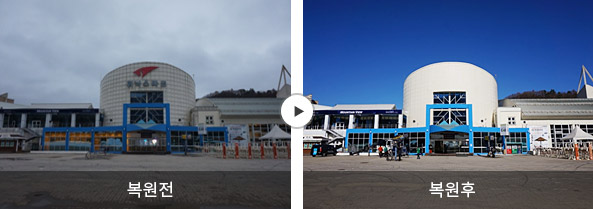 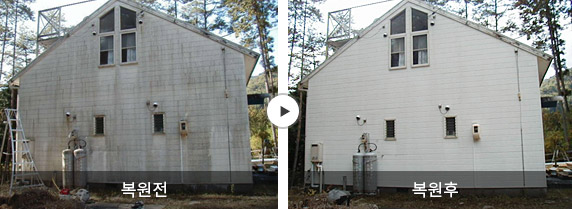MOS(유지보수 최적화 솔루션)는 단순한 고장 수리가 아닌 **예방적 유지보수(PdM)**를 통해 장비의 잠재적 위험을 제거합니다. 모든 작업은 데이터 기반으로 이루어지며, 장비 수명 주기 비용(LCC)을 최소화합니다.
- **냉각 시스템 효율 개선:** 노후된 냉각 설비의 **응축기 세척 및 냉매 최적화**를 통해 효율 35% 개선 및 월간 전력 소비량 20% 절감 기록.
- **고장률 감소:** 진동 분석 기반의 **베어링 및 모터 상태 진단**을 정기적으로 실시하여 예상치 못한 고장률을 80% 감소.
- **식품 안전성 확보:** HACCP 기준에 맞춘 정기 위생 관리를 통해 **미생물 오염 지수(APC)**를 기준치 이하로 유지.
첨단 예방 정비 기술 및 표준 인증
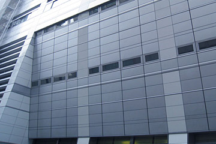 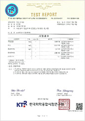MOS는 산업 장비의 신뢰성을 보장하기 위해 최첨단 진단 기술을 통합합니다.
**핵심 진단 기술**
- **열화상 진단:** 과열 부위를 신속하게 식별하여 전기적/기계적 고장을 예방합니다.
- **초음파/진동 분석:** 모터, 펌프 등 회전체의 베어링 상태를 정밀 진단하여 고장 시점을 예측합니다.
- **내시경 검사:** 육안으로 확인 불가능한 설비 내부의 미세 균열 및 오염 상태를 확인합니다.
**인증 및 표준**
- **ISO 9001 기반:** 모든 유지보수 절차가 국제 품질 경영 시스템에 따라 체계적으로 문서화됩니다.
- **HACCP 표준 준수:** 식품 관련 설비 관리에 있어 위생 표준을 철저히 준수합니다.
- **OHSAS/ISO 45001:** 작업 안전 보건 시스템을 확립하여 안전한 현장을 조성합니다.
MOS 5단계 핵심 공정 (Lifecycle Management)
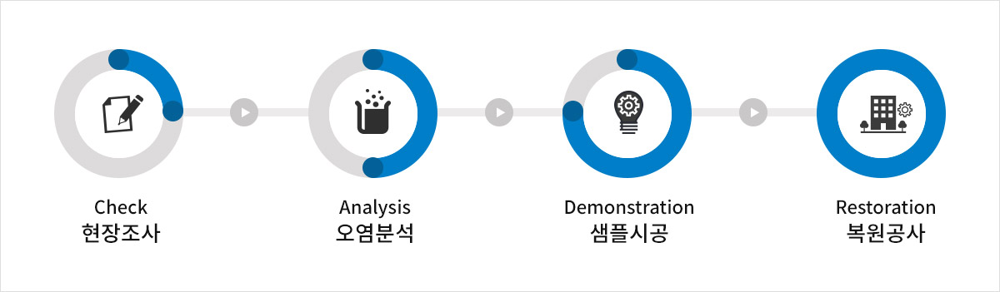MOS는 단순한 청소 작업이 아닌, 설비의 수명을 관리하는 통합 솔루션이며 **예방적 유지보수(PdM)의 핵심**입니다.
**MOS 5단계 프로세스**
- **1. 상태 진단:** 열화상, 진동계 등 전문 장비를 통한 데이터 기반의 **정밀 초기 진단** 및 문제점 리포트 작성.
- **2. 오염원 제거:** 설비 재질 및 오염 특성에 맞는 **최적의 친환경 세척** 공법 (드라이아이스, 고압 스팀 등) 적용.
- **3. 살균 및 방청:** 고성능 살균제 및 **식품 등급 코팅제**를 사용하여 재오염 및 부식 방지 처리.
- **4. 기능 최적화:** 베어링 윤활, 벨트 장력 조정, **노후 부품 교체** 등 설비 성능을 최고 상태로 복구.
- **5. 사후 리포팅:** 작업 전후 사진, 진단 데이터, 사용 자재 명세, **차기 권고 사항**을 포함한 상세 보고서 제출.

 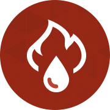
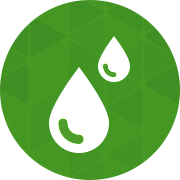
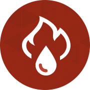
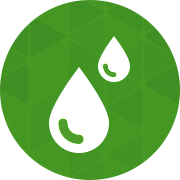
AVK (Air & Ventilation Care)
AVK 현장 포트폴리오: 쾌적한 실내 환경 조성
AVK(공조 및 환기 관리)는 대형 건물, 병원, 식품 공장 등 **실내 공기질(IAQ)**이 핵심인 모든 시설에 적용되는 전문 공조 시스템 클리닝 솔루션입니다. 덕트 내부의 미세먼지, 곰팡이, **레지오넬라균** 등 유해 물질을 근본적으로 제거합니다.
**주요 적용 시설**
- **병원/제약 시설:** 엄격한 청정도 유지를 위한 HEPA 필터 영역 및 공조기 관리.
- **식품 제조 시설:** 교차 오염 방지를 위한 생산 라인 덕트 시스템 정밀 세척.
- **대형 오피스/학교:** HVAC 시스템의 에너지 효율 개선 및 근무/학습 환경 최적화.
HVAC (공조) 시스템 분해 및 세척 상세
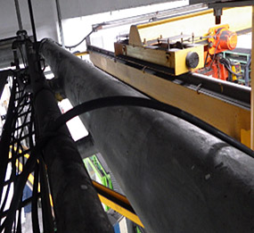 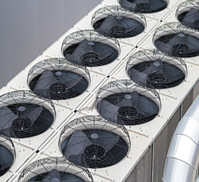 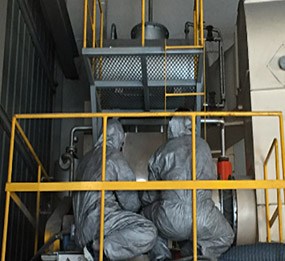 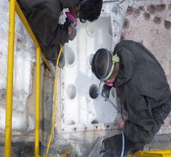HVAC 시스템은 코일, 팬, 덕트 등 수많은 부품으로 이루어져 있으며, 각 부품은 전문적인 세척 방식이 필요합니다. 오염된 공조기는 에너지 손실을 유발하며, 이는 운영 비용 증가로 이어집니다.
**주요 관리 대상 부품**
- **열교환 코일:** 고압/고온 스팀을 이용한 핀 사이 미세 오염물 및 스케일 제거.
- **송풍 팬 및 하우징:** 팬 블레이드의 밸런스를 유지하면서 곰팡이 및 먼지 완벽 제거.
- **에어 핸들링 유닛 (AHU):** 내부 챔버, 드레인 팬 등 공기 접촉면의 분해 살균 및 코팅.
- **덕트 내부:** 로봇 카메라와 전용 브러시를 이용한 사각지대 없는 세척.
AVK 주요 공정 단계: 체계적인 청정 관리
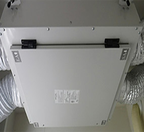 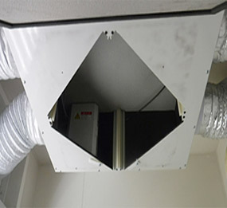 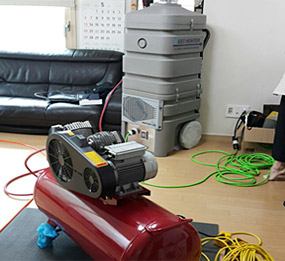 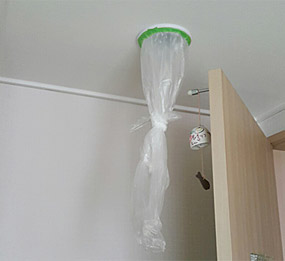 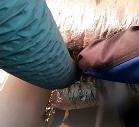AVK 공정은 환경부 가이드라인을 준수하며, 작업 전/후 공기질 측정 결과를 통해 투명하게 검증됩니다.
**단계별 전문 작업**
- **1. 현장 밀폐 및 음압 유지:** 덕트 개구부를 완벽히 밀폐하고 **음압 장비**를 가동하여 작업 중 오염 확산 방지.
- **2. 기계적 오염 제거:** 전용 로봇 브러시, 에어젯 장비를 사용하여 덕트 내부에 달라붙은 먼지를 물리적으로 박리.
- **3. 잔류물 흡입:** 고성능 **헤파 필터 장착 흡진 장치**를 통해 박리된 오염물을 완벽하게 포집/제거.
- **4. 미생물 살균 및 코팅:** 인체 무해한 광범위 살균제를 분무 후 **친환경 항균 코팅** 처리하여 재오염 장기간 억제.
- **5. 성능 복원 및 검증:** 작업 후 공조기 재조립, 기능 테스트 및 **PM10, 미생물 공기 중 농도** 측정으로 최종 보고서 발행.
IAQ (실내 공기질) 및 미생물 관리 전략

AVK는 단순히 공조기를 청소하는 것을 넘어, **레지오넬라균** 등 공조 시스템에서 서식하기 쉬운 병원성 미생물에 대한 관리 솔루션을 제공합니다. 특히 습도가 높은 코일이나 드레인 팬 영역의 미생물 제어는 IAQ 유지의 핵심입니다.
**AVK의 IAQ 관리 중점 사항**
- **미생물 검사:** 작업 전후 **ATP, 배양 검사**를 통해 미생물 오염도 변화를 정량적으로 확인.
- **레지오넬라균 관리:** 냉각탑, 드레인 팬 등에서 증식하는 **레지오넬라균** 집중 관리 솔루션 적용.
- **습도 제어 솔루션:** 곰팡이 성장의 근본 원인인 과도한 습기 관리를 위한 드레인 시스템 최적화.
- **고성능 필터 제안:** 건물 환경에 최적화된 MERV 등급의 필터 교체 및 교체 주기 컨설팅 제공.

이 다이어그램은 공기 순환 구조 내에서 발생할 수 있는 오염 경로를 시각화하며, AVK가 차단하는 주요 위험 지점을 나타냅니다. 깨끗한 공기 공급을 위한 과학적 접근입니다.
DRYICE (드라이아이스 클리닝)
DRYICE 클리닝: 정밀 장비의 무손상 & 무잔류 세척
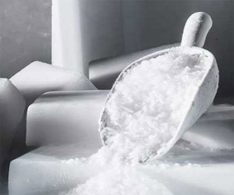**드라이아이스(CO2 고체) 클리닝**은 -78.5℃의 펠릿을 초음속으로 분사하여 오염물을 제거하는 **혁신적인 무수(無水), 무잔류(無殘留) 청소 공법**입니다. **화학 용제나 물 사용이 금지된** 정밀하고 복잡한 산업 설비에 최적화되어 있습니다.
**주요 산업별 적용 및 기대 효과**
- **금형 및 주조:** 생산 라인의 금형에 부착된 이형제, 수지 찌꺼기를 **생산 중단 없이** 제거하여 가동 시간 극대화.
- **전자 및 전력 설비:** 모터, 발전기, 배전반 등의 **절연체 손상 없이** 오염물을 제거하여 화재 및 고장 위험 방지.
- **식품 제조 라인:** **화학 약품 잔류 걱정 없이** 컨베이어 벨트, 믹서 등의 유분 및 미생물 오염을 제거하여 위생 완벽 관리.
CO2 클리닝 심층 기술: 3가지 제거 원리
드라이아이스 클리닝은 **물리적, 열역학적, 기체 팽창적**인 3가지 복합 효과를 이용한 첨단 공법입니다.
**1. 충격 효과 (Kinetic Effect)**
- 초음속(약 300m/s)으로 분사된 펠릿이 오염물을 물리적으로 깨뜨려 박리합니다.
**2. 열충격 효과 (Thermal Shock)**
- -78.5℃의 펠릿이 뜨거운 오염물 표면에 접촉하면, 오염물과 기판 사이에 급격한 온도차를 발생시켜 수축, 균열을 유도합니다.
**3. 승화 팽창 효과 (Sublimation)**
- 오염물의 미세 균열 속으로 침투한 펠릿이 즉시 **기체(CO2)로 승화**하며 최대 800배까지 팽창하는 압력을 발생시켜 오염물을 기판에서 밀어냅니다.
이러한 원리로 **장비의 표면 마모 없이** 오염물만 선택적으로 제거할 수 있으며, 2차 폐기물 걱정이 없어 친환경적입니다.